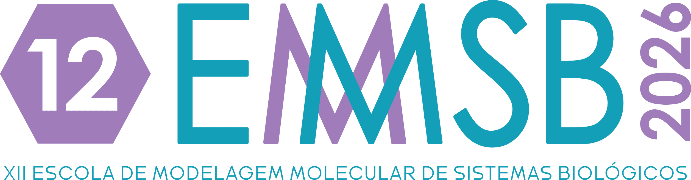

Ajuste polinomial e sobreajuste
Ajusta polinômios de graus crescentes a poucos pontos e compara o erro de treino com o de teste: a intuição de underfitting × overfitting em um só gráfico.
Abrir no Colab
minicurso · 2026
Códigos utilizados no minicurso oferecido na XII Escola de Modelagem Molecular em Sistemas Biológicos — 2026.
Abra cada um no Google Colab — roda no navegador, sem instalar nada.
Ajusta polinômios de graus crescentes a poucos pontos e compara o erro de treino com o de teste: a intuição de underfitting × overfitting em um só gráfico.
Abrir no ColabTreina uma árvore de decisão para separar as três espécies do conjunto Iris e desenha a árvore aprendida — cada divisão é uma pergunta sobre uma medida da flor.
Abrir no ColabCombina cem árvores em uma floresta aleatória sobre o Iris e ranqueia a importância de cada atributo — pétala e sépala, comprimento e largura.
Abrir no ColabAgrupa as flores sem usar os rótulos, encontra os centroides e usa o método do cotovelo (elbow) para decidir quantos grupos existem.
Abrir no ColabUm estudo de caso completo: do dado bruto do ChEMBL a um classificador que rotula moléculas como FORTE ou FRACO — ou se abstém quando não tem base. Curadoria, descritores e fingerprints, partição por esqueleto, comparação de modelos e domínio de aplicabilidade.